fullrmc.Constraints package¶
AngleConstraints¶
AngleConstraints contains classes for all constraints related angles between atoms.
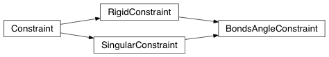
- class fullrmc.Constraints.AngleConstraints.BondsAngleConstraint(engine, anglesMap=None, rejectProbability=1)¶
Bases: fullrmc.Core.Constraint.RigidConstraint, fullrmc.Core.Constraint.SingularConstraint
Its controls the angle between 3 defined atoms.
Parameters: engine (None, fullrmc.Engine): The constraint RMC engine.
anglesMap (list): The angles map definition. Every item must be a list of five items.
- First item: The central atom index.
- Second item: The index of the left atom forming the angle (interchangeable with the right atom).
- Third item: The index of the right atom forming the angle (interchangeable with the left atom).
- Fourth item: The minimum lower limit or the minimum angle allowed in rad.
- Fifth item: The maximum upper limit or the maximum angle allowed in rad.
rejectProbability (Number): rejecting probability of all steps where squaredDeviations increases. It must be between 0 and 1 where 1 means rejecting all steps where squaredDeviations increases and 0 means accepting all steps regardless whether squaredDeviations increases or not.
- accept_move(indexes)¶
Accept move.
Parameters: - indexes (numpy.ndarray): Group atoms indexes the move will be applied to.
- angles¶
Get angles dictionary.
- anglesMap¶
Get angles map.
- atomsLUAD¶
Get look up angles dictionary, connecting every atom’s index to a central atom angles definition of angles attribute.
- compute_after_move(indexes, movedBoxCoordinates)¶
Compute constraint after move is executed.
Parameters: - indexes (numpy.ndarray): Group atoms indexes the move will be applied to.
- movedBoxCoordinates (numpy.ndarray): The moved atoms new coordinates.
- compute_before_move(indexes)¶
Compute constraint before move is executed.
Parameters: - indexes (numpy.ndarray): Group atoms indexes the move will be applied to.
- compute_data()¶
Compute data and update engine constraintsData dictionary.
- compute_squared_deviations(data)¶
Compute the squared deviation of data not satisfying constraint conditions.
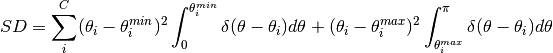
Where:
 is the total number of defined angles constraints.
is the total number of defined angles constraints.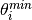 is the angle constraint lower limit set for constraint i.
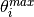 is the angle constraint upper limit set for constraint i.
 is the angle computed for constraint i.
is the angle computed for constraint i. is the Dirac delta function.
is the Dirac delta function.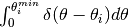 is equal to 1 if 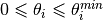 and 0 elsewhere.
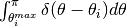 is equal to 1 if 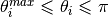 and 0 elsewhere.
Parameters: - data (numpy.array): The constraint value data to compute squaredDeviations.
Returns: - squaredDeviations (number): The calculated squaredDeviations of the constraint.
- create_angles_by_definition(anglesDefinition)¶
Creates anglesMap using angles definition. Calls set_angles(anglesMap) and generates angles attribute.
Parameters: - anglesDefinition (dict): The angles definition.
Every key must be a molecule name (residue name in pdb file).
Every key value must be a list of angles definitions.
Every angle definition is a list of five items where:
- First item: The name of the central atom forming the angle.
- Second item: The name of the left atom forming the angle (interchangeable with the right atom).
- Third item: The name of the right atom forming the angle (interchangeable with the left atom).
- Fourth item: The minimum lower limit or the minimum angle allowed in degrees.
- Fifth item: The maximum upper limit or the maximum angle allowed in degrees.
e.g. (Carbon tetrachloride): anglesDefinition={"CCL4": [('C','CL1','CL2' , 105, 115), ('C','CL2','CL3' , 105, 115), ('C','CL3','CL4' , 105, 115), ('C','CL4','CL1' , 105, 115) ] }- anglesDefinition (dict): The angles definition.
Every key must be a molecule name (residue name in pdb file).
Every key value must be a list of angles definitions.
Every angle definition is a list of five items where:
- get_constraint_value()¶
Computes all partial Mean Pair Distances (MPD) below the defined minimum distance.
Returns: - MPD (dictionary): The MPD dictionary, where keys are the element wise intra and inter molecular MPDs and values are the computed MPDs.
- listen(message, argument=None)¶
Listens to any message sent from the Broadcaster.
Parameters: - message (object): Any python object to send to constraint’s listen method.
- argument (object): Any type of argument to pass to the listeners.
- reject_move(indexes)¶
Reject move.
Parameters: - indexes (numpy.ndarray): Group atoms indexes the move will be applied to.
- set_angles(anglesMap)¶
Sets the angles dictionary by parsing the anglesMap list.
Parameters: - anglesMap (list): The angles map definition.
Every item must be a list of five items.
- First item: The central atom index.
- Second item: The index of the left atom forming the angle (interchangeable with the right atom).
- Third item: The index of the right atom forming the angle (interchangeable with the left atom).
- Fourth item: The minimum lower limit or the minimum angle allowed in rad.
- Fifth item: The maximum upper limit or the maximum angle allowed in rad.
- anglesMap (list): The angles map definition.
Every item must be a list of five items.
- should_step_get_rejected(squaredDeviations)¶
Overloads ‘RigidConstraint’ should_step_get_rejected method. It computes whether to accept or reject a move based on before and after move calculation and not squaredDeviations. If any of activeAtomsDataBeforeMove or activeAtomsDataAfterMove is None an Exception will get raised.
Parameters: - squaredDeviations (number): not used in this case
Return: - result (boolean): True to reject step, False to accept
- squaredDeviations¶
Get constraint’s current deviations square.
BondConstraints¶
BondConstraints contains classes for all constraints related bonds between atoms.
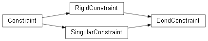
- class fullrmc.Constraints.BondConstraints.BondConstraint(engine, bondsMap=None, rejectProbability=1)¶
Bases: fullrmc.Core.Constraint.RigidConstraint, fullrmc.Core.Constraint.SingularConstraint
Its controls the bond between 2 defined atoms.
Parameters: engine (None, fullrmc.Engine): The constraint RMC engine.
- bondsMap (list): The bonds map definition.
Every item must be a list of four items.
- First item is the first atom index.
- Second item the second atom index forming the bond,
- Third item: The lower limit or the minimum bond length allowed.
- Fourth item: The upper limit or the maximum bond length allowed.
rejectProbability (Number): rejecting probability of all steps where squaredDeviations increases. It must be between 0 and 1 where 1 means rejecting all steps where squaredDeviations increases and 0 means accepting all steps regardless whether squaredDeviations increases or not.
- accept_move(indexes)¶
Accept move
Parameters: - indexes (numpy.ndarray): Group atoms indexes the move will be applied to
- bonds¶
Get bonds dictionary
- bondsMap¶
Get bonds map
- compute_after_move(indexes, movedBoxCoordinates)¶
Compute constraint after move is executed
Parameters: - indexes (numpy.ndarray): Group atoms indexes the move will be applied to.
- movedBoxCoordinates (numpy.ndarray): The moved atoms new coordinates.
- compute_before_move(indexes)¶
Compute constraint before move is executed
Parameters: - indexes (numpy.ndarray): Group atoms indexes the move will be applied to
- compute_data()¶
Compute data and update engine constraintsData dictionary.
- compute_squared_deviations(data)¶
Compute the squared deviation of data not satisfying constraint conditions.
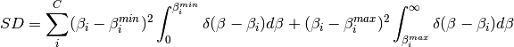
Where:
is the total number of defined bonds constraints.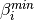 is the bond constraint lower limit set for constraint i.
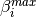 is the bond constraint upper limit set for constraint i.
 is the bond length computed for constraint i. is the Dirac delta function.
is the bond length computed for constraint i. is the Dirac delta function.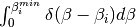 is equal to 1 if 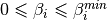 and 0 elsewhere.
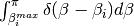 is equal to 1 if 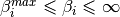 and 0 elsewhere.
Parameters: - data (numpy.array): The constraint value data to compute squaredDeviations.
Returns: - squaredDeviations (number): The calculated squaredDeviations of the constraint.
- create_bonds_by_definition(bondsDefinition)¶
Creates bondsMap using bonds definition. Calls set_bonds(bondsMap) and generates bonds attribute.
Parameters: - bondsDefinition (dict): The bonds definition.
Every key must be a molecule name (residue name in pdb file).
Every key value must be a list of bonds definitions.
Every bond definition is a list of four items where:
- First item: The name of the first atom forming the bond.
- Second item: The name of the second atom forming the bond.
- Third item: The lower limit or the minimum bond length allowed.
- Fourth item: The upper limit or the maximum bond length allowed.
e.g. (Carbon tetrachloride): bondsDefinition={"CCL4": [('C','CL1' , 1.55, 1.95), ('C','CL2' , 1.55, 1.95), ('C','CL3' , 1.55, 1.95), ('C','CL4' , 1.55, 1.95) ] }- bondsDefinition (dict): The bonds definition.
Every key must be a molecule name (residue name in pdb file).
Every key value must be a list of bonds definitions.
Every bond definition is a list of four items where:
- get_constraint_value()¶
Compute all partial Mean Pair Distances (MPD) below the defined minimum distance.
Returns: - MPD (dictionary): The MPD dictionary, where keys are the element wise intra and inter molecular MPDs and values are the computed MPDs.
- listen(message, argument=None)¶
Listens to any message sent from the Broadcaster.
Parameters: - message (object): Any python object to send to constraint’s listen method.
- argument (object): Any type of argument to pass to the listeners.
- reject_move(indexes)¶
Reject move
Parameters: - indexes (numpy.ndarray): Group atoms indexes the move will be applied to
- set_bonds(bondsMap)¶
Sets the bonds dictionary by parsing the bondsMap list.
Parameters: - bondsMap (list): The bonds map definition.
Every item must be a list of four items.
- First item is the first atom index.
- Second item the second atom index forming the bond,
- Third item: The lower limit or the minimum bond length allowed.
- Fourth item: The upper limit or the maximum bond length allowed.
- bondsMap (list): The bonds map definition.
Every item must be a list of four items.
- should_step_get_rejected(squaredDeviations)¶
Overloads ‘RigidConstraint’ should_step_get_rejected method. It computes whether to accept or reject a move based on before and after move calculation and not squaredDeviations. If any of activeAtomsDataBeforeMove or activeAtomsDataAfterMove is None an Exception will get raised.
Parameters: - squaredDeviations (number): not used in this case
Return: - result (boolean): True to reject step, False to accept
- squaredDeviations¶
Get constraint’s current squared deviation.
DistanceConstraints¶
DistanceConstraints contains classes for all constraints related distances between atoms.
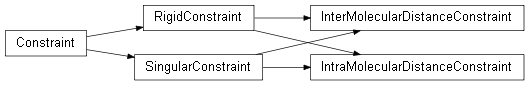
- class fullrmc.Constraints.DistanceConstraints.InterMolecularDistanceConstraint(engine, defaultDistance=1.5, pairsDistance=None, rejectProbability=1)¶
Bases: fullrmc.Core.Constraint.RigidConstraint, fullrmc.Core.Constraint.SingularConstraint
Its controls the inter-molecular distances between atoms.
Parameters: engine (None, fullrmc.Engine): The constraint RMC engine.
defaultDistance (number): The minimum distance allowed set by default for all atoms type.
pairsDistance (None, list, set, tuple): The minimum distance set to every pair of elements. A list of tuples must be given, all missing pairs will get automatically assigned the given defaultMinimumDistance value. First defined elements pair distance will cancel all redundant. If None is given all pairs will be automatically generated and assigned the given defaultMinimumDistance value
e.g. [('h','h',1.5), ('h','c',2.015), ...]rejectProbability (Number): rejecting probability of all steps where squaredDeviations increases. It must be between 0 and 1 where 1 means rejecting all steps where squaredDeviations increases and 0 means accepting all steps regardless whether squaredDeviations increases or not.
- accept_move(indexes)¶
Accept move
Parameters: - indexes (numpy.ndarray): Group atoms indexes the move will be applied to
- compute_after_move(indexes, movedBoxCoordinates)¶
Compute constraint after move is executed
Parameters: - indexes (numpy.ndarray): Group atoms indexes the move will be applied to.
- movedBoxCoordinates (numpy.ndarray): The moved atoms new coordinates.
- compute_before_move(indexes)¶
Compute constraint before move is executed
Parameters: - indexes (numpy.ndarray): Group atoms indexes the move will be applied to
- compute_data()¶
Compute data and update engine constraintsData dictionary.
- compute_squared_deviations(data)¶
Compute the squared deviations (SD) of data not satisfying constraint conditions.
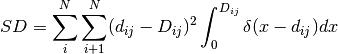
Where:
 is the total number of atoms in the system.
is the total number of atoms in the system.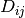 is the distance constraint set for atoms pair (i,j).
 is the distance between atom i and atom j. is the Dirac delta function.
is the distance between atom i and atom j. is the Dirac delta function.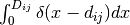 is equal to 1 if 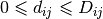 and 0 elsewhere.
Parameters: - data (numpy.array): The constraint value data to compute squaredDeviations.
Returns: - squaredDeviations (number): The calculated squaredDeviations of the constraint.
- defaultDistance¶
Gets the experimental data distances minimum.
- elementsPairs¶
Get elements pairs
- get_constraint_value()¶
Compute all partial Mean Pair Distances (MPD) below the defined minimum distance.
Returns: - MPD (dictionary): The MPD dictionary, where keys are the element wise intra and inter molecular MPDs and values are the computed MPDs.
- listen(message, argument=None)¶
listen to any message sent from the Broadcaster.
Parameters: - message (object): Any python object to send to constraint’s listen method.
- argument (object): Any type of argument to pass to the listeners.
- lowerLimitArray¶
Get lowerLimitArray used in distances calculation. for InterMolecularDistanceConstraint it’s always a numpy.zeros array
- pairsDistance¶
Get elements pairs
- pairsDistanceDefinition¶
Get elements pairs
- reject_move(indexes)¶
Reject move
Parameters: - indexes (numpy.ndarray): Group atoms indexes the move will be applied to
- set_default_distance(defaultDistance)¶
Sets the default intermolecular minimum distance.
Parameters: - defaultDistance (number): The default minimum distance.
- set_pairs_distance(pairsDistance)¶
Sets the pairs intermolecular minimum distance.
Parameters: pairsDistance (None, list, set, tuple): The minimum distance set to every pair of elements. A list of tuples must be given, all missing pairs will get automatically assigned the given defaultMinimumDistance value. First defined elements pair distance will cancel all redundant. If None is given all pairs will be automatically generated and assigned the given defaultMinimumDistance value
e.g. [('h','h',1.5), ('h','c',2.015), ...]
- upperLimitArray¶
Get upperLimitArray used in distances calculation. for InterMolecularDistanceConstraint it’s the minimum distance allowed between pair of intermolecular atoms
- class fullrmc.Constraints.DistanceConstraints.IntraMolecularDistanceConstraint(engine, defaultMinDistance=0.67, typeDefinition='name', pairsLimitsDefinition=None, rejectProbability=1, mode='distance')¶
Bases: fullrmc.Core.Constraint.RigidConstraint, fullrmc.Core.Constraint.SingularConstraint
Its controls the intra-molecular distances between atoms.
Parameters: engine (None, fullrmc.Engine): The constraint RMC engine.
defaultMinDistance (number): The minimum distance allowed set by default for all atoms type.
typeDefinition (string): Can be either ‘element’ or ‘name’. It sets the rules about how to differentiate between atoms and how to parse pairsLimits
pairsLimitsDefinition (None, list, set, tuple): The lower and upper limits distance set to every pair of elements. A list of tuples must be given, all missing pairs will get automatically assigned the given defaultMinDistance to infinity value. First defined elements pair distance will cancel all redundant. If None is given all pairs will be automatically generated and assigned the given defaultMinDistance to infinity value
e.g. [('c','h',0.9, 1.2), ...]rejectProbability (Number): rejecting probability of all steps where squaredDeviations increases. It must be between 0 and 1 where 1 means rejecting all steps where squaredDeviations increases and 0 means accepting all steps regardless whether squaredDeviations increases or not.
mode (string): Defines the way squaredDeviations is calculated. In such constraints the definition of squaredDeviations can be confusing because many parameters play different roles in this type of calculation. The number of unsatisfied constraint conditions is an important parameter and the reduced unsatisfied distances is another one. Choosing a mode of calculation puts more weight and importance on a parameter. Allowed modes are:
- distance (Default): squaredDeviations is simply calculated as the square summation of the reduced out of limits distances. This mode ensures minimizing the global unsatisfied distance of the constraint while additional atom-pairs unsatisfying constraint conditions can be created.
- number: squaredDeviations is calculated such as the number of non-satisfied constraints must decrease from one step to another while the square summation of the reduced out of limits distances might increase.
- accept_move(indexes)¶
Accept move
Parameters: - indexes (numpy.ndarray): Group atoms indexes the move will be applied to
- allTypes¶
Get all atoms types.
- compute_after_move(indexes, movedBoxCoordinates)¶
Compute constraint after move is executed
Parameters: - indexes (numpy.ndarray): Group atoms indexes the move will be applied to.
- movedBoxCoordinates (numpy.ndarray): The moved atoms new coordinates.
- compute_before_move(indexes)¶
Compute constraint before move is executed
Parameters: - indexes (numpy.ndarray): Group atoms indexes the move will be applied to
- compute_data()¶
Compute data and update engine constraintsData dictionary.
- compute_squared_deviations(data)¶
Compute the squared deviation of data not satisfying constraint conditions.

Where:
is the total number of atoms in the system.is the distance constraint set for atoms pair (i,j).
is the distance between atom i and atom j. is the Dirac delta function.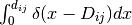 is equal to 0 if 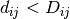 and 1 when 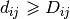.
Parameters: - data (numpy.array): The constraint value data to compute squaredDeviations.
Returns: - squaredDeviations (number): The calculated squaredDeviations of the constraint.
- defaultMinDistance¶
Gets the experimental data distances minimum.
- existingSquaredDeviationsModes¶
Get list of defined squaredDeviations modes of calculation
- get_constraint_value()¶
Compute all partial Mean Pair Distances (MPD) below the defined minimum distance.
Returns: - MPD (dictionary): The MPD dictionary, where keys are the element wise intra and inter molecular MPDs and values are the computed MPDs.
- listen(message, argument=None)¶
listen to any message sent from the Broadcaster.
Parameters: - message (object): Any python object to send to constraint’s listen method.
- arguments (object): Any type of argument to pass to the listeners.
- lowerLimitArray¶
Get lowerLimitArray used in distances calculation.
- mode¶
Get the mode of squaredDeviations calculation.
- numberOfAtomsPerType¶
Get the number of atoms per type dictionary.
- numberOfTypes¶
Get the number of defined types in the configuration.
- pairsLimits¶
Get the normalized pairs limits definition
- pairsLimitsDefinition¶
Get the pairs limits definition as defined by user
- reject_move(indexes)¶
Reject move
Parameters: - indexes (numpy.ndarray): Group atoms indexes the move will be applied to
- set_default_minimum_distance(defaultMinDistance)¶
Sets the default intermolecular minimum distance.
Parameters: - defaultMinDistance (number): The default minimum distance.
- set_mode(mode)¶
Sets the squaredDeviations mode of calculation.
Parameters: - mode (object): The mode of calculation
- set_pairs_limits(pairsLimitsDefinition)¶
Sets the pairs intermolecular minimum distance.
Parameters: pairsLimitsDefinition (None, list, set, tuple): The lower and upper limits distance set to every pair of elements. A list of tuples must be given, all missing pairs will get automatically assigned the given defaultMinDistance to infinity value. First defined elements pair distance will cancel all redundant. If None is given all pairs will be automatically generated and assigned the given defaultMinDistance to infinity value.
e.g. [('c','h',0.9, 1.2), ...]
- set_type_definition(typeDefinition, pairsLimitsDefinition=None)¶
Its an alias to set_pairs_limits with pairsLimits argument passed as the already defined pairsLimitsDefinitions
- typeDefinition¶
Get types definition.
- types¶
Get the defined types set.
- typesIndexes¶
Get defined types indexes
- typesPairs¶
Get the list of pairs of types
- upperLimitArray¶
Get upperLimitArray used in distances calculation.
ImproperAngleConstraints¶
ImproperAngleConstraints contains classes for all constraints related improper angles between atoms.

- class fullrmc.Constraints.ImproperAngleConstraints.ImproperAngleConstraint(engine, anglesMap=None, rejectProbability=1)¶
Bases: fullrmc.Core.Constraint.RigidConstraint, fullrmc.Core.Constraint.SingularConstraint
Its controls the improper angle between 4 defined atoms. It is mainly used to keep atoms in the plane. The improper angle is the defined between a first improper atom and the plane formed of the three other atoms.
Parameters: engine (None, fullrmc.Engine): The constraint RMC engine.
- anglesMap (list): The angles map definition.
Every item must be a list of five items.
- First item: The improper atom index that must be in the plane.
- Second item: The index of the atom ‘O’ considered the origin of the plane.
- Third item: The index of the atom ‘x’ used to calculated ‘Ox’ vector.
- Fourth item: The index of the atom ‘y’ used to calculated ‘Oy’ vector.
- Fifth item: The minimum lower limit or the minimum angle allowed in rad.
- Sixth item: The maximum upper limit or the maximum angle allowed in rad.
rejectProbability (Number): rejecting probability of all steps where squaredDeviations increases. It must be between 0 and 1 where 1 means rejecting all steps where squaredDeviations increases and 0 means accepting all steps regardless whether squaredDeviations increases or not.
- accept_move(indexes)¶
Accept move
Parameters: - indexes (numpy.ndarray): Group atoms indexes the move will be applied to
- angles¶
Get angles dictionary.
- anglesMap¶
Get angles map.
- atomsLUAD¶
Get look up angles dictionary, connecting every atom’s index to a central atom angles definition of angles attribute.
- compute_after_move(indexes, movedBoxCoordinates)¶
Compute constraint after move is executed
Parameters: - indexes (numpy.ndarray): Group atoms indexes the move will be applied to.
- movedBoxCoordinates (numpy.ndarray): The moved atoms new coordinates.
- compute_before_move(indexes)¶
Compute constraint before move is executed
Parameters: - indexes (numpy.ndarray): Group atoms indexes the move will be applied to
- compute_data()¶
Compute data and update engine constraintsData dictionary.
- compute_squared_deviations(data)¶
Compute the squared deviation of data not satisfying constraint conditions.
Where:
is the total number of defined improper angles constraints.is the improper angle constraint lower limit set for constraint i.
is the improper angle constraint upper limit set for constraint i.
is the improper angle computed for constraint i. is the Dirac delta function.is equal to 1 if and 0 elsewhere.
is equal to 1 if and 0 elsewhere.
Parameters: - data (numpy.array): The constraint value data to compute squaredDeviations.
Returns: - squaredDeviations (number): The calculated squaredDeviations of the constraint.
- create_angles_by_definition(anglesDefinition)¶
Creates anglesMap using angles definition. Calls set_angles(anglesMap) and generates angles attribute.
Parameters: - anglesDefinition (dict): The angles definition.
Every key must be a molecule name (residue name in pdb file).
Every key value must be a list of angles definitions.
Every angle definition is a list of five items where:
- First item: The name of the improper atom that must be in the plane.
- Second item: The name of the atom ‘O’ considered the origin of the plane.
- Third item: The name of the atom ‘x’ used to calculated ‘Ox’ vector.
- Fourth item: The name of the atom ‘y’ used to calculated ‘Oy’ vector.
- Fifth item: The minimum lower limit or the minimum angle allowed in degrees.
- Sixth item: The maximum upper limit or the maximum angle allowed in degrees.
e.g. (Benzene): anglesDefinition={"BENZ": [('C3','C1','C2','C6', -10, 10), ('C4','C1','C2','C6', -10, 10), ('C5','C1','C2','C6', -10, 10) ] }- anglesDefinition (dict): The angles definition.
Every key must be a molecule name (residue name in pdb file).
Every key value must be a list of angles definitions.
Every angle definition is a list of five items where:
- get_constraint_value()¶
Compute all partial Mean Pair Distances (MPD) below the defined minimum distance.
Returns: - MPD (dictionary): The MPD dictionary, where keys are the element wise intra and inter molecular MPDs and values are the computed MPDs.
- listen(message, argument=None)¶
Listens to any message sent from the Broadcaster.
Parameters: - message (object): Any python object to send to constraint’s listen method.
- argument (object): Any type of argument to pass to the listeners.
- reject_move(indexes)¶
Reject move
Parameters: - indexes (numpy.ndarray): Group atoms indexes the move will be applied to
- set_angles(anglesMap)¶
Sets the angles dictionary by parsing the anglesMap list.
Parameters: - anglesMap (list): The angles map definition.
Every item must be a list of five items.
- First item: The improper atom index that must be in the plane.
- Second item: The index of the atom ‘O’ considered the origin of the plane.
- Third item: The index of the atom ‘x’ used to calculated ‘Ox’ vector.
- Fourth item: The index of the atom ‘y’ used to calculated ‘Oy’ vector.
- Fifth item: The minimum lower limit or the minimum angle allowed in rad.
- Sixth item: The maximum upper limit or the maximum angle allowed in rad.
- anglesMap (list): The angles map definition.
Every item must be a list of five items.
- should_step_get_rejected(squaredDeviations)¶
Overloads ‘RigidConstraint’ should_step_get_rejected method. It computes whether to accept or reject a move based on before and after move calculation and not squaredDeviations. If any of activeAtomsDataBeforeMove or activeAtomsDataAfterMove is None an Exception will get raised.
Parameters: - squaredDeviations (number): not used in this case
Return: - result (boolean): True to reject step, False to accept
- squaredDeviations¶
Get constraint’s current squared deviation.
PairCorrelationConstraints¶
PairCorrelationConstraint contains classes for all constraints related experimental pair correlation functions.

- class fullrmc.Constraints.PairCorrelationConstraints.PairCorrelationConstraint(engine, experimentalData, weighting='atomicNumber', scaleFactor=1.0, windowFunction=None, limits=None)¶
Bases: fullrmc.Constraints.PairDistributionConstraints.PairDistributionConstraint
It controls the total pair correlation function (pcf) of the system noted as g(r). The pair correlation function g(r) and pair distribution function G(r) are directly related as in the following 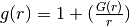
Parameters: - engine (None, fullrmc.Engine): The constraint RMC engine.
- experimentalData (numpy.ndarray, string): The experimental data as numpy.ndarray or string path to load data using numpy.loadtxt.
- weighting (string): The elements weighting.
- scaleFactor (string): A normalization scale factor used to normalize the computed data to the experimental ones.
- windowFunction (None, numpy.ndarray): The window function to convolute with the computed pair distribution function of the system prior to comparing it with the experimental data. In general, the experimental pair distribution function G(r) shows artificial wrinkles, among others the main reason is because G(r) is computed by applying a sine Fourier transform to the experimental structure factor S(q). Therefore window function is used to best imitate the numerical artefacts in the experimental data.
- limits (None, tuple, list): The distance limits to compute the histograms. If None, the limits will be automatically set the the min and max distance recorded in the experimental data. If not None, a tuple of exactly two items where the first is of minimum distance or None and the second is the maximum distance or None.
- check_experimental_data(experimentalData)¶
- compute_after_move(indexes, movedBoxCoordinates)¶
Compute constraint after move is executed
Parameters: - indexes (numpy.ndarray): Group atoms indexes the move will be applied to.
- movedBoxCoordinates (numpy.ndarray): The moved atoms new coordinates.
- compute_before_move(indexes)¶
Compute constraint before move is executed
Parameters: - indexes (numpy.ndarray): Group atoms indexes the move will be applied to
- compute_data()¶
Compute data and update engine constraintsData dictionary.
PairDistributionConstraints¶
PairDistributionConstraints contains classes for all constraints related experimental pair distribution functions.
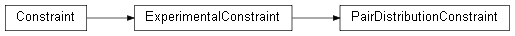
- class fullrmc.Constraints.PairDistributionConstraints.PairDistributionConstraint(engine, experimentalData, weighting='atomicNumber', scaleFactor=1.0, windowFunction=None, limits=None)¶
Bases: fullrmc.Core.Constraint.ExperimentalConstraint
It controls the total pair distribution function (pdf) of the system noted as G(r). The pair distribution function is the directly calculated quantity from a powder diffraction experiments. It is obtained from the experimentally determined total-scattering structure function S(Q), by a Sine Fourier transform. pdf tells the probability of finding atomic pairs separated by the real space distance r. The mathematical definition of the G(r) is:
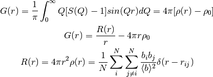
Where:
 is the momentum transfer.
is the momentum transfer. is the distance between two atoms.
is the distance between two atoms.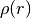 is the spherical average defined as 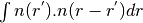.
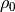 is the average number density of the samples.
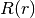 is the radial distribution function (rdf).
is the total number of atoms. is the scattering length for atom i.
is the scattering length for atom i.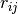 is the distance between atoms i and j.
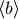 is the average scattering length over all atoms
 is the probability density
of some atoms being r distant from each other.
is the probability density
of some atoms being r distant from each other.NB: pair distribution function G(r) and the pair correlation function g(r) are directly related as in the following 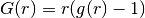
Parameters: - engine (None, fullrmc.Engine): The constraint RMC engine.
- experimentalData (numpy.ndarray, string): The experimental data as numpy.ndarray or string path to load data using numpy.loadtxt.
- weighting (string): The elements weighting.
- scaleFactor (number): A normalization scale factor used to normalize the computed data to the experimental ones.
- windowFunction (None, numpy.ndarray): The window function to convolute with the computed pair distribution function of the system prior to comparing it with the experimental data. In general, the experimental pair distribution function G(r) shows artificial wrinkles, among others the main reason is because G(r) is computed by applying a sine Fourier transform to the experimental structure factor S(q). Therefore window function is used to best imitate the numerical artefacts in the experimental data.
- limits (None, tuple, list): The distance limits to compute the histograms. If None, the limits will be automatically set the the min and max distance of the experimental data. If not None, a tuple of exactly two items where the first is the minimum distance or None and the second is the maximum distance or None.
- accept_move(indexes)¶
Accept move
Parameters: - indexes (numpy.ndarray): Group atoms indexes the move will be applied to
- bin¶
Gets the experimental data distances bin.
- check_experimental_data(experimentalData)¶
- compute_after_move(indexes, movedBoxCoordinates)¶
Compute constraint after move is executed
Parameters: - indexes (numpy.ndarray): Group atoms indexes the move will be applied to.
- movedBoxCoordinates (numpy.ndarray): The moved atoms new coordinates.
- compute_and_set_squared_deviations()¶
Computes and sets the constraint’s squaredDeviations.
- compute_before_move(indexes)¶
Compute constraint before move is executed
Parameters: - indexes (numpy.ndarray): Group atoms indexes the move will be applied to
- compute_data()¶
Compute data and update engine constraintsData dictionary.
- compute_squared_deviations(data)¶
Compute the squared deviation between data and the experimental one.
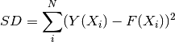
Where:
is the total number of experimental data points.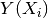 is the experimentation data point 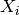.
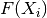 is the computed from the model data .
Parameters: - data (numpy.array): The data to compare with the experimental one and compute the squared deviation.
Returns: - squaredDeviations (number): The calculated squaredDeviations of the constraint.
- elementsPairs¶
Get elements pairs
- experimentalDistances¶
Get the experimental distances array
- experimentalPDF¶
Get the experimental pdf
- get_constraint_original_value()¶
Compute all partial Pair Distribution Functions (PDFs).
Returns: - PDFs (dictionary): The PDFs dictionnary, where keys are the element wise intra and inter molecular PDFs and values are the computed PDFs.
- get_constraint_value()¶
Compute all partial Pair Distribution Functions (PDFs).
Returns: - PDFs (dictionary): The PDFs dictionnary, where keys are the element wise intra and inter molecular PDFs and values are the computed PDFs.
- histogramSize¶
Get the histogram size
- limits¶
The histogram computation limits.
- listen(message, argument=None)¶
Listens to any message sent from the Broadcaster.
Parameters: - message (object): Any python object to send to constraint’s listen method.
- argument (object): Any type of argument to pass to the listeners.
- maximumDistance¶
Gets the experimental data distances maximum.
- minimumDistance¶
Gets the experimental data distances minimum.
- reject_move(indexes)¶
Reject move
Parameters: - indexes (numpy.ndarray): Group atoms indexes the move will be applied to
- scaleFactor¶
Get the scaleFactor.
- set_experimental_data(experimentalData)¶
Sets the constraint’s experimental data.
Parameters: - experimentalData (numpy.ndarray, string): The experimental data as numpy.ndarray or string path to load data using numpy.loadtxt.
- set_limits(limits)¶
Set the histogram computation limits.
Parameters: - limits (None, tuple, list): The distance limits to compute the histograms and compute with the experimental data. If None, the limits will be automatically set the the min and max distance recorded in the experimental data. If not None, a tuple of minimum distance or None and maximum distance or None should be given.
- set_scale_factor(scaleFactor)¶
Sets the scale factor.
Parameters: - scaleFactor (string): A normalization scale factor used to normalize the computed data to the experimental ones.
- set_weighting(weighting)¶
Sets elements weighting. It must a valid entry of pdbParser atoms database
Parameters: - weighting (string): The elements weighting.
- set_window_function(windowFunction)¶
Sets the window function.
Parameters: - windowFunction (None, numpy.ndarray): The window function to convolute with the computed pair distribution function of the system prior to comparing it with the experimental data. In general, the experimental pair distribution function G(r) shows artificial wrinkles, among others the main reason is because G(r) is computed by applying a sine Fourier transform to the experimental structure factor S(q). Therefore window function is used to best imitate the numerical artefacts in the experimental data.
- shellsCenter¶
Get the shells center array
- shellsVolumes¶
Get the shells volume array
- weightingScheme¶
Get elements weighting scheme.
- windowFunction¶
Get the window function.